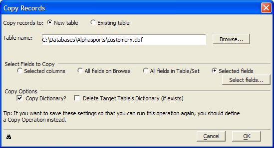

Copying Selected Records from another Table
You may copy selected records from another table to the current table using the Copy Operations or when viewing a table through a form or browse.
To copy records:
Select Records > Copy Records... .
Select whether you are copying records to a New table or Existing table.
If you selected Existing table in step 2:
Select a table from the Table Name list.
Click OK to proceed with the append or Cancel to quit without appending.

If you selected New table in step 2:
Click Browse... to navigate to and select the table whose records you wish to copy.
Select the fields to copy. If you were viewing a browse, the options are:
Selected columns
All field on Browse
All fields in Table/Set
Selected fields
All fields on form
All fields in Table/Set
Selected fields
If you clicked Selected fields, click the Select fields... button to display the Select Fields dialog box.
Optionally, pick a field from the Available fields list and click
 to add it to the Selected fields
list.
to add it to the Selected fields
list.Optionally, pick multiple fields from the Available fields list and click
 to add them to the Selected
fields list.
to add them to the Selected
fields list.Optionally, pick a field from the Selected fields list and click
 to remove it from the Selected fields
list.
to remove it from the Selected fields
list.Optionally, pick multiple fields from the Selected fields list and click
 to remove them to the Selected
fields list.
to remove them to the Selected
fields list.Optionally, click
 to view the Xbasic code generated by this procedure.
to view the Xbasic code generated by this procedure.Click OK to continue or Cancel to discard your inputs.
Optionally, clear Copy Dictionary?
Optionally, check Delete Target Table's Dictionary.
Click OK to proceed with the append or Cancel to quit without appending.
If you were viewing a form, the options are:
See Also
Copy Operations, Appending Records from another Table, Moving Records to another Table
Supported By
Alpha Five Version 5 and Above